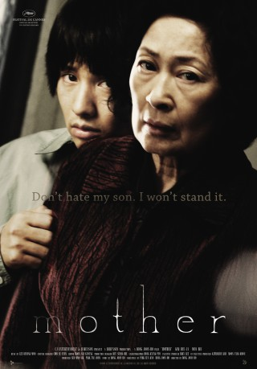

#3978 Mother
 
 IMDB-Wertung: 7.8 / 10
IMDB-Wertung: 7.8 / 10  Metascore: 0
Metascore: 0 
Seit längerer Zeit lebt die Mutter allein mit ihrem einzigen Sohn Do-joon. Der 26-Jährige ist ein stiller, zurück gebliebener Typ, der keine Chance beim weiblichen Geschlecht besitzt und von seiner Mutter überfürsorglich umsorgt wird. Nach der Ermordung eines Schulmädchens gilt der hilflose junge Mann, der dem Opfer nachts zum Tatort folgte, als Hauptverdächtiger. Ohne echte Beweise wirkt er für die Polizei, die ihn bald festnimmt, als idealer Schuldiger. Nachdem die Beamten beim Verhör ein Geständnis erpressen und sein Anwalt sich als eher unfähig erweist, beschließt Do-joons Mutter, die Sache selbst in die Hand zu nehmen und diversen Spuren nachzugehen, um dessen Unschuld zu beweisen.
Jahr: 2009
Dauer: 128 Minuten
FSK: 12
Land: Süd-Korea Studio: MFA FilmdistributionTonspuren:
Untertitel: Deutsch,
Auflösung: 1080p (1920x816) Größe: 5212 MB
Genre: Thriller, Drama, Krimi, Mystery
Regisseur: Joon-ho Bong
Drehbuch: Lenore Andriel
Soundtrack:
Darsteller:
- Hye-ja Kim als Mother
- Bin Won als Yoon Do-joon
- Ku Jin als Jin-tae
- Mi-seon Jeon als Mi-sun
- Sae-byeok Song als Sepaktakraw Detective
- Woo-hee Chun als Mi-na
- Je-mun Yun als Je-moon
- Byoung-Soon Kim als Group Leader
- Gin-goo Kim als Ah-jeong's Grandma
- Moo-yeong Yeo als Lawyer Kong Seok-ho
- Young-Suck Lee als Elder at Junk Shop
- Hee-ra Mun als Moon Ah-jeong
- Mi-do Lee als Hyung-teo
- Young-ki Jung als Kkang-ma
- Gyu-pil Go als Ddung-ddung
- Jeong-wuk Kim als
- Seung-hyeon Lee als
- Bok-dong Mun als
Datei: X:\HD-Eastern-Modern(A-M)\Mother (2009, FSK12, 1920x816).mkv seit 08.07.2016
Festplatte: HD Eastern+Western
 Es gibt insgesamt 104 Filme in der Gruppe 'HD-Eastern-Modern(A-M)'
Es gibt insgesamt 104 Filme in der Gruppe 'HD-Eastern-Modern(A-M)'